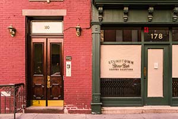

About Us
We are Caffeine Oasis!
We have been locally owned for the past 10 years and have been grateful to be servicing Central Florida! We know that while our town may be expanding, our community is only getting bigger and we are so excited to continue on this journey with you all! Caffeine Oasis serves as a place where you can grab a book and a tasty treat to relax for hours. Most of our community is college students and avid book lovers! So if you are looking for a place to relax or to join a book club, come by Caffeine Oasis! We can't wait to meet you!
About Our Owner
We are owned by Symphonee Swartz who has a love of small towns and cares deeply about building community! Symphonee is a lover of books, digital media, and quiet spaces. Our owner has brought her collection of books into Caffeine Oasis where people can read any type of books that they would like to read. She also encourages other people to bring in donations of books to help have other literary works in our shop. You'll usually see Symphonee around the shop either helping at the front desk, taking pictures or videos for our social media, or reading a book whenever we are not busy. Come on by Caffeine Oasis to meet our amazing owner and join one of her book clubs that she hosts throughout the month!
Hours of Operation
- Monday: 9 A.M - 9 P.M
- Tuesday: 9 A.M - 9 P.M
- Wednesday: 9 A.M - 10 P.M
- Thursday: 9 A.M - 10 P.M
- Friday: 10 A.M - 6 P.M
- Closed Saturday & Sundays